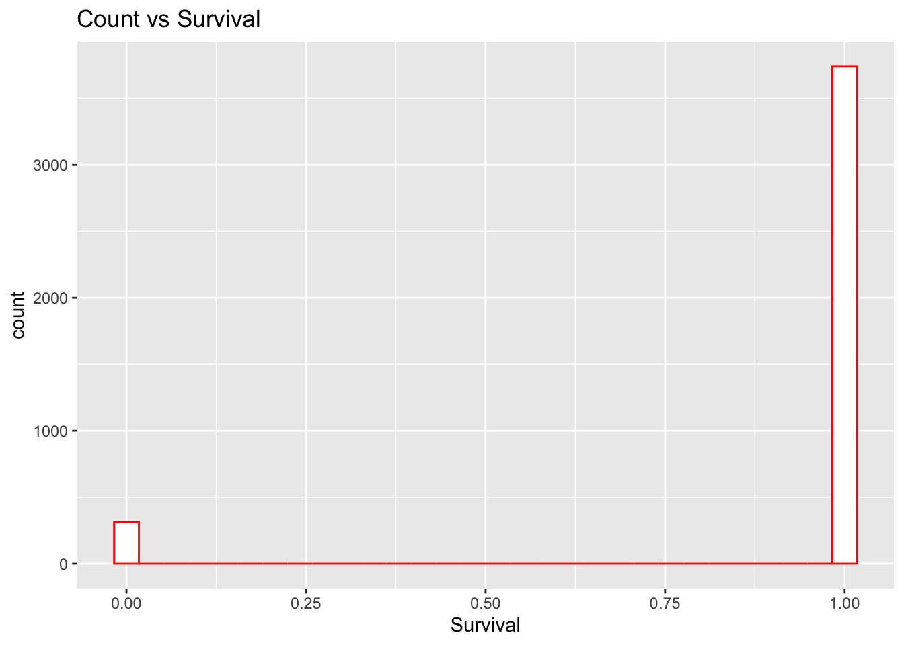
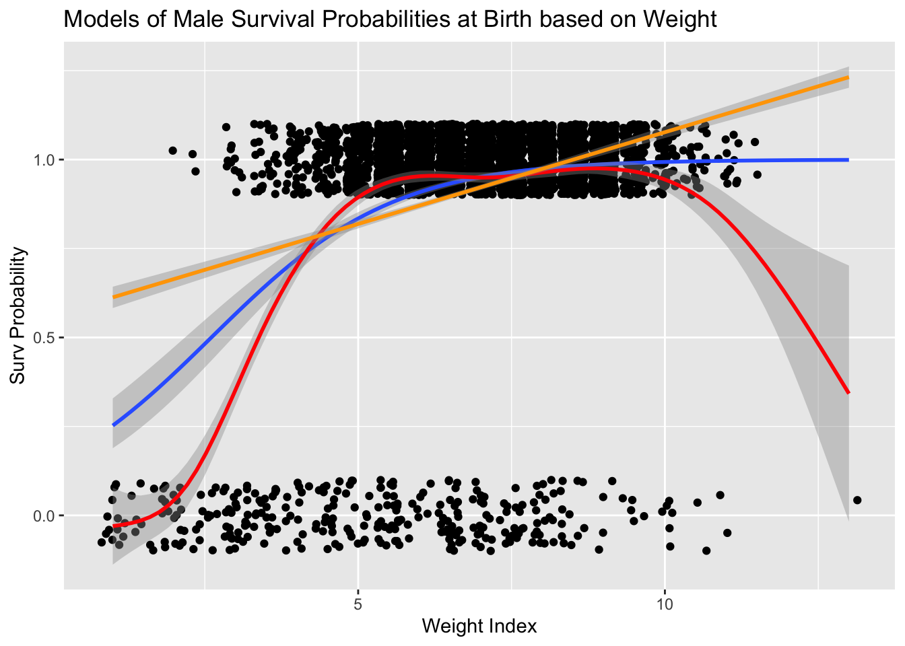
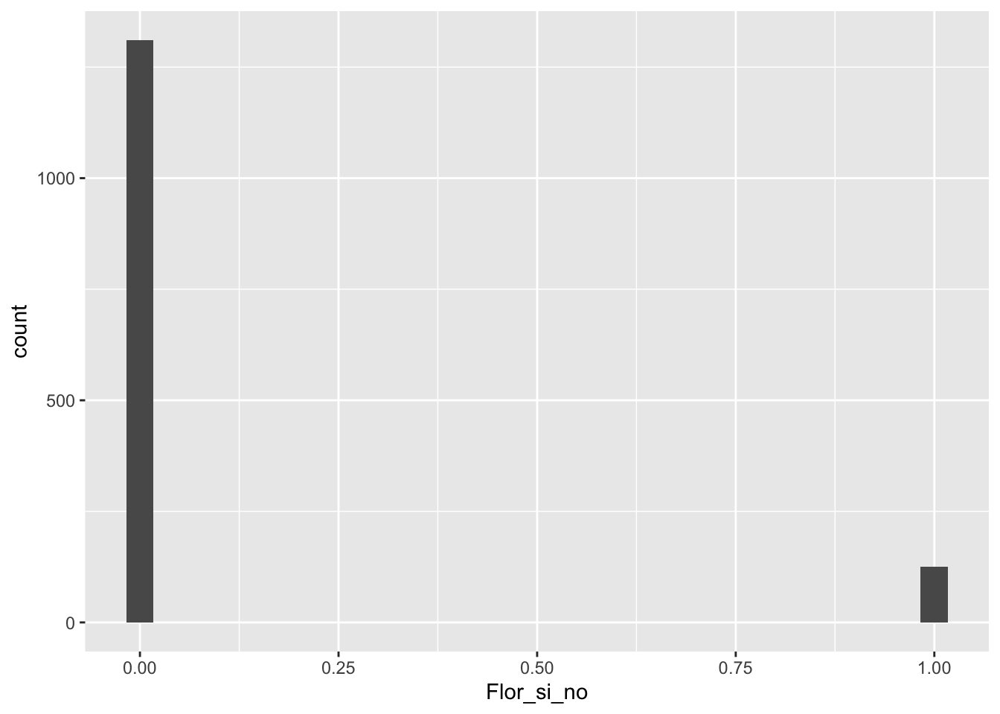
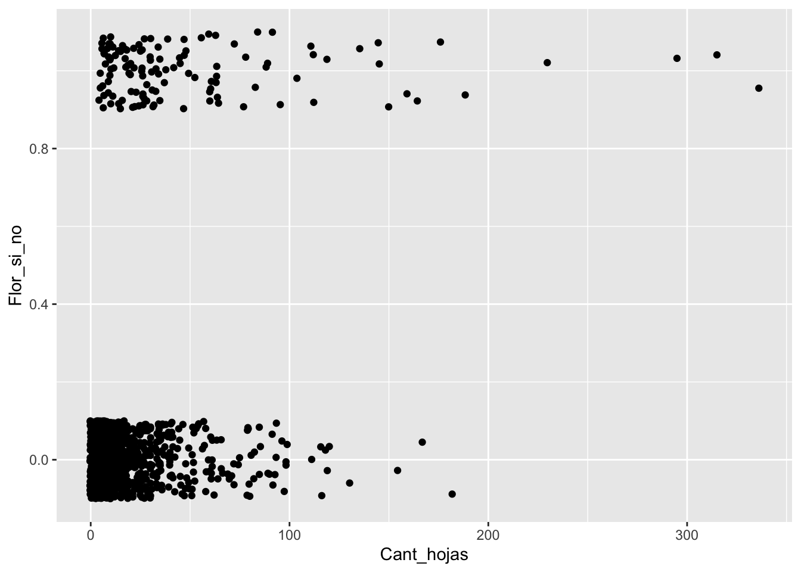
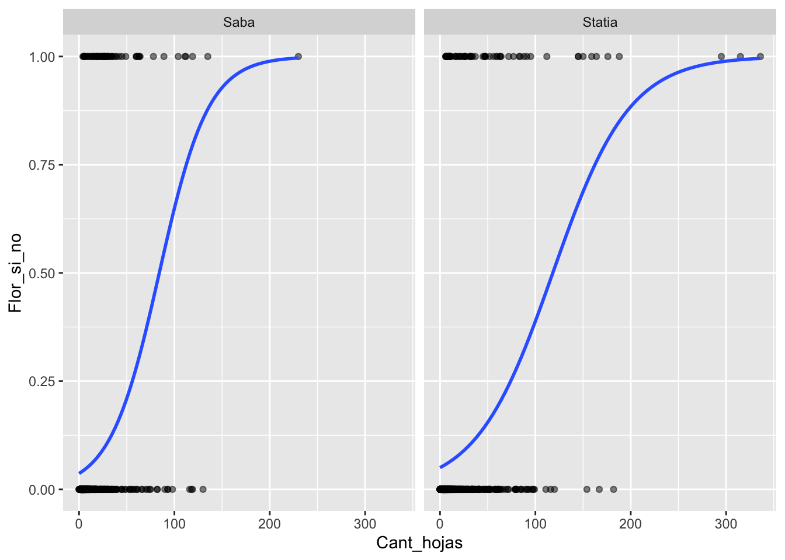
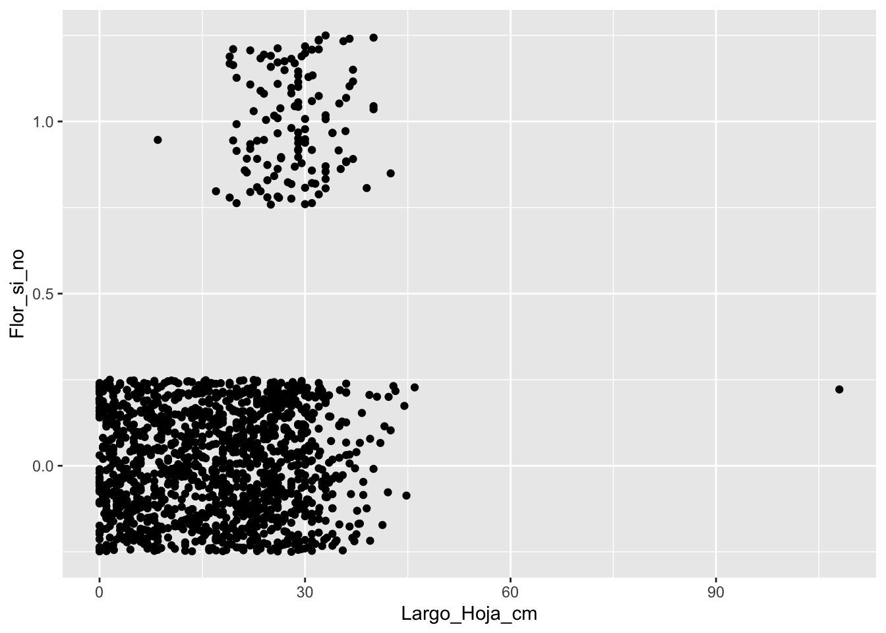
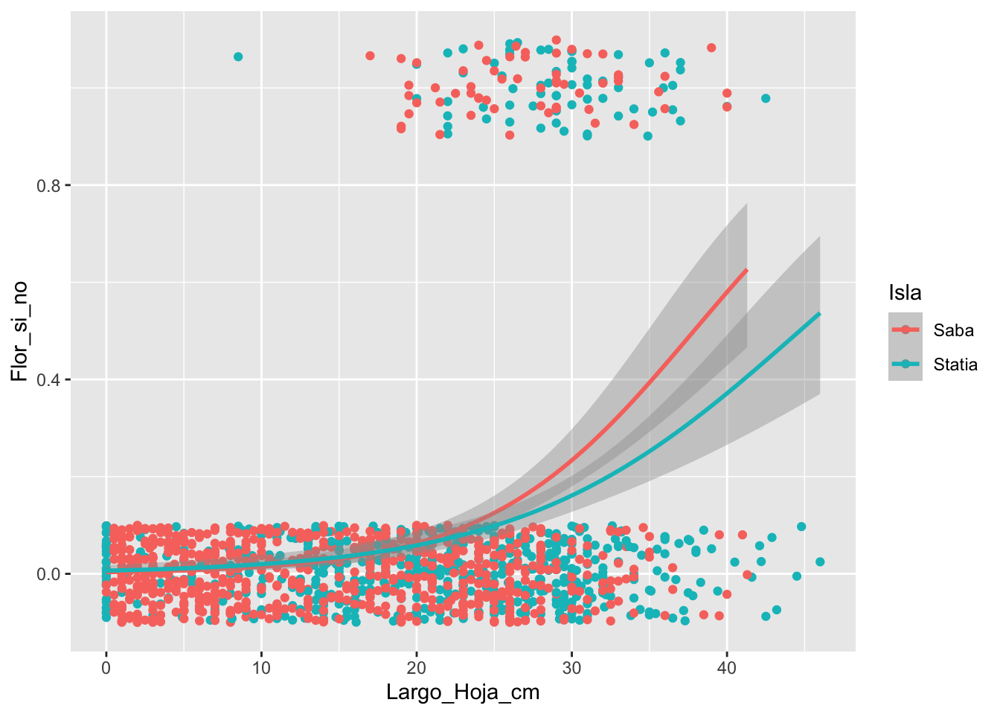

TF5 Regresión logística


Los paquetes
Regessión Logística
La regresión logística se el procedimiento de evaluar el efecto de las repuestas de una variable continua sobre una variable discreta limitado a solamente dos alternativas. Por ejemplo: si o no, vivo o muerto, presente o ausente, tiene flores o no tiene flores, estar infectado o no estar infectado con el COVID-19. Tipicamente se codifica con valores numéricos. En uno de los estados se la asigna un “0” y la otra se la asigna un “1”.
Para entender un set de datos ficticio, por ejemplo, la variable continua podría representar el tamaño de 20 bacteria (en µm), y la variable discreta binomial pudiese representar si esta bacteria hizo fisión (1) o no (0).
Ejemplo de un patrón casi perfecto
Evaluando el gráfico se observa que cuando las bacterias son muy pequeña no ocurre fision y cuando son tamaño de 9 µm o más hay una probabilidad fisión binaria. Si una bacteria tiene un tamaño de 10 µm tiene una probabilidad de 50%.
continuous=c(rep(1:20,2))
binomial=c(0,0,0,0,0,0,0,0,1,0,1,1,1,1,1,1,1,1,1,1, 0,0,0,0,0,0,0,0,0,0,1,1,1,1,1,1,1,1,1,1)
df=data.frame(continuous,binomial)
df## continuous binomial
## 1 1 0
## 2 2 0
## 3 3 0
## 4 4 0
## 5 5 0
## 6 6 0
## 7 7 0
## 8 8 0
## 9 9 1
## 10 10 0
## 11 11 1
## 12 12 1
## 13 13 1
## 14 14 1
## 15 15 1
## 16 16 1
## 17 17 1
## 18 18 1
## 19 19 1
## 20 20 1
## 21 1 0
## 22 2 0
## 23 3 0
## 24 4 0
## 25 5 0
## 26 6 0
## 27 7 0
## 28 8 0
## 29 9 0
## 30 10 0
## 31 11 1
## 32 12 1
## 33 13 1
## 34 14 1
## 35 15 1
## 36 16 1
## 37 17 1
## 38 18 1
## 39 19 1
## 40 20 1# producción del gráfico
ggplot( df, aes(x=continuous, y=binomial)) +
geom_point() +
stat_smooth(method="glm", method.args = list(family = "binomial"), se=F) ## `geom_smooth()` using formula 'y ~ x'
Evaluando el modelo
Igual como en una regresión lineal se evalúa el intercepto y las variable continuas. En este caso tenemos solamente una variable continua. El Estimate son los coeficientes en la escala \(logit(p)=\log\frac{p}{1-p}\), donde las \(p's\) representa las probabilidades de estar una de los estados (por ejemplo vivo). El valor de p = Pr(>|z|) es la probabilidad de que el intercepto o las pendientes sean diferentes de cero.
Los valores de Null Deviance y Residual Deviance son indices del “goodness of fit” del modelo. Valores grande siempre sugiere que el modelo no es bueno.
La desviación nula (Null Deviance) muestra qué tan bien la variable de respuesta es predicha por un modelo que incluye solamente el intercepto (gran media). La desviación de los residuales donde incluye las de variables independientes.
En nuestro modelo ficticio, el Null Deviance es bien alto (55.35) y cuando se incluye la variable independiente el deviance (residual deviance) baja mucho (7.83). Esto suguiere que el modelo no es muy bueno a predecir si las células van tener una fisión, al contrario el tamaño es una variable que explica gran parte de las variación para predecir la probabilidad de fisión binaria.
##
## Call:
## glm(formula = binomial ~ continuous, family = binomial(), data = df)
##
## Deviance Residuals:
## Min 1Q Median 3Q Max
## -1.17741 -0.02124 0.00032 0.02124 1.92375
##
## Coefficients:
## Estimate Std. Error z value Pr(>|z|)
## (Intercept) -16.7941 8.5378 -1.967 0.0492 *
## continuous 1.6794 0.8489 1.978 0.0479 *
## ---
## Signif. codes: 0 '***' 0.001 '**' 0.01 '*' 0.05 '.' 0.1 ' ' 1
##
## (Dispersion parameter for binomial family taken to be 1)
##
## Null deviance: 55.3517 on 39 degrees of freedom
## Residual deviance: 7.8364 on 38 degrees of freedom
## AIC: 11.836
##
## Number of Fisher Scoring iterations: 9Modelo Lineal Generalizado
En este modulo se hace una primera introducción a un otro tipo de herramienta para el análisis de datos, denominado Modelo Lineal Generalizado, GLM. Lo interesante de esta acercamiento es que aun que uno tiene una variable de respuesta que no cumple con distribución normal hay múltiples opciones para los análisis. En este modulo solamente se estará presentando el tipo de datos donde la variable de respuesta (Y) es binomial.
Hay tres componentes en cualquier GLM:
Componente aleatorio: se refiere a la distribución de probabilidad de la variable de respuesta (Y); por ejemplo, distribución binomial (0, 1,: Si o No: Vivo o Muerto). Nota que la variable Y puede tener muchas otras tipo de distribución incluyendo la distribución normal, lognormal, proporción, Poisson y otros.
Variable predictivas: especifica las variables explicativas \(X_1,\ X_2,\ X_3,...X_k\) en el modelo, la combinación lineal se puede expresar con la siguiente forma; por ejemplo, \(\beta_0+\beta_1\cdot x_1+\beta_2\cdot x_2,\ ...+\beta_k\cdot x_k2\) como hemos visto en una regresión lineal.
Función de enlace: η o g (μ): especifica el enlace entre componentes aleatorios y sistemáticos. Dice cómo el valor esperado de la respuesta se relaciona con las variables de la ecuación lineal explicativa.
Los supuestos de la regresión logística.
- El resultado es la variable es binaria o también conocida como dicótoma (sí o no: presente o ausente, 1 o 0).
- Existe una relación lineal entre el logit (p) de la variable de repuesta y las variables predictora.
- No hay valores extremos o valores atípicos en los predictores continuos.
- No hay correlaciones altas (es decir, multicolinealidad) entre los variables predictores.
Evaluando si el modelo es aceptable
Hay muchas alternativas para evaluar si el modelo logístico es aceptable o sea que explica parte de la variación. El método típico de \(R^2\) no es viable para la regresión logística, pero hay múltiples alternativas. En el siguiente documento pueden observar algunas de estas. Pero nota que no hay uno que es necesariamente mejor, cada una de estas alternativas tiene sus ventajas. Una de las desventaja es que la escala no es como \(r^2\) que varia de 0 a 1, por consecuencia sus interpretaciones son siempre más complejas.
https://www.r-bloggers.com/evaluating-logistic-regression-models/
Comparar modelos lineal y logístico
El primer paso es entender cual es la diferencia entre una regresión lineal y una regresión logística. Podemos visualizar ambas formula y ver como difieren.
La regresión lineal:
\[Y_i=\beta_0+\beta_1X_i+\beta_2X_i\] Regresión logística:
p=P(Y=1) o sea la probabilidad que p tenga el valor de 1 o 1-p= 1-P(Y=1) que seria el valor de 0 en su conjunto de datos.
\[\log\frac{p}{1-p}=\beta_0+\beta_1X_i+\beta_2X_i\] Nota que la primera ecuación es un modelo que trata de predecir el valor de Y en la segunda se estima la probabilidad de que el valor de predictora tenga una probabilidad entre 1 o 0. Las probabilidades van a variar de 0 a 1 o sea de 0% a 100%. El vocabulario correcto es que las respuesta son binarias también dicho de la distribución de Bernoulli.
Van a ver en la literatura que la formula se representa también de la siguiente forma, donde se escribe como \(logit(p)\).
\[logit\left(p\right)=\log\frac{p}{1-p}=\beta_0+\beta_1X_i+\beta_2X_i\]
En el siguiente enlace se puede encontrar más información https://en.wikipedia.org/wiki/Logistic_regression
Primer ejemplo
Karn and Penrose data Set
Los Datos
Los datos provienen de un estudio realizado por Mary N. Karn and L. S. Penrose publicado en Annals of Eugenics, titulado Birth Weight and gestation time in relation to maternal age, parity and infant survival publicado en 1951. Estaremos usando solamente una parte de los datos. El periodo de gestación y el peso de los bebés varón al nacer y su supervivencia (fallecio= 0 y sobrevivio= 1). Para facilitar el trabajo he modificado los datos un poco para cumplir con las tareas asignada.
En el archivo “Karn_Penrose_infant_survivorship.csv” tiene datos sobre 7036 nacimiento entre los años 1935 y 1946. El archivo tiene 4 columnas:
- Line_number = la secuencia de los datos
- Gestation_Time_days = El periodo de gestación en días
- Weigth_lb = El peso del bebe en libras
- Surv_Index = “0” o “1”
library(readr)
Karn_Penrose_infant_survivorship <- read_csv("Data/Karn_Penrose_infant_survivorship.csv")## Parsed with column specification:
## cols(
## row_num = col_double(),
## Survival = col_double(),
## Weigth_lb = col_double(),
## Gestation_Time_days = col_double()
## )## # A tibble: 6 x 4
## row_num Survival Weigth_lb Gestation_Time_days
## <dbl> <dbl> <dbl> <dbl>
## 1 1 0 1 155
## 2 2 0 1 165
## 3 3 0 1 165
## 4 4 0 5.5 170
## 5 5 0 1 180
## 6 6 0 1.5 180## # A tibble: 6 x 4
## row_num Survival Weigth_lb Gestation_Time_days
## <dbl> <dbl> <dbl> <dbl>
## 1 4047 1 7 340
## 2 4048 1 7.5 340
## 3 4049 1 7.5 340
## 4 4050 1 7 345
## 5 4051 1 9 345
## 6 4052 1 10 345## row_num Survival Weigth_lb Gestation_Time_days
## Min. : 1 Min. :0.000 Min. : 1.000 Min. :155.0
## 1st Qu.:1014 1st Qu.:1.000 1st Qu.: 6.000 1st Qu.:265.0
## Median :2026 Median :1.000 Median : 7.000 Median :280.0
## Mean :2026 Mean :0.923 Mean : 7.015 Mean :276.2
## 3rd Qu.:3039 3rd Qu.:1.000 3rd Qu.: 8.000 3rd Qu.:295.0
## Max. :4052 Max. :1.000 Max. :13.000 Max. :345.0##Pregunta #1: Explique en su propia palabra cual es una de las hipotesis que se puede probar. Aclarando especificamente si esta es una hipotesis nula o alterna.
Hipoteis Nula: El peso de los varones y el periodo de gestacion no afectan el indice de supervivencia.
Hipotesis alterna #1: Los varones con un periodo de mayor gestacion tienen mayor probabilidad de supervivencia que los varones con un mayor peso.
Hipotesis alterna #2: Los varones con mayor peso al nacer tienen mayor probabilidad de supervivencia que los varones con un mayor periodo de gestacion.
##Pregunta #2: Haga una grafica de la variable de respuesta
## [1] "row_num" "Survival" "Weigth_lb"
## [4] "Gestation_Time_days"## tibble [4,052 × 4] (S3: spec_tbl_df/tbl_df/tbl/data.frame)
## $ row_num : num [1:4052] 1 2 3 4 5 6 7 8 9 10 ...
## $ Survival : num [1:4052] 0 0 0 0 0 0 0 0 0 0 ...
## $ Weigth_lb : num [1:4052] 1 1 1 5.5 1 1.5 1.5 1.5 2 2.5 ...
## $ Gestation_Time_days: num [1:4052] 155 165 165 170 180 180 180 185 185 185 ...
## - attr(*, "spec")=
## .. cols(
## .. row_num = col_double(),
## .. Survival = col_double(),
## .. Weigth_lb = col_double(),
## .. Gestation_Time_days = col_double()
## .. )library(ggplot2)
ggplot(KPdata, aes(Weigth_lb))+
geom_histogram(binwidth= .25, colour="white", fill="red")+
labs(x = "Peso de los bebe, lbs", y = "Frecuencia")+
ggtitle("Frecuencia vs Peso de los bebe, lbs")
##Pregunta #3: Haga una grafica de las variables explicativas ##a. Periodo de gestacion ##b. Peso de los varones al nacer
ggplot(KPdata, aes(Gestation_Time_days))+
geom_histogram(binwidth= 4, fill="white", colour="red")+
labs(x= "Duración de Gestacion", y="Frecuancia")+
ggtitle("Frecuencia vs Duración de Gestación")
ggplot(KPdata,aes(Survival))+
geom_histogram(fill="white", colour="red")+
labs(x="Survival")+
ggtitle("Count vs Survival")## `stat_bin()` using `bins = 30`. Pick better value with `binwidth`.
##Pregunta #4: Usando la prueba correcta evalua la relacion entre la supervivencia y: ##a. periodo de gestacion ##b. peso de los varones al nacer
## Loading required package: carData##
## Attaching package: 'car'## The following object is masked from 'package:dplyr':
##
## recode## The following object is masked from 'package:purrr':
##
## some## [1] "row_num" "Survival" "Weigth_lb"
## [4] "Gestation_Time_days"##
## Call:
## glm(formula = Survival ~ Weigth_lb, family = binomial(), data = KPdata)
##
## Deviance Residuals:
## Min 1Q Median 3Q Max
## -3.7486 0.1921 0.2682 0.4385 1.3558
##
## Coefficients:
## Estimate Std. Error z value Pr(>|z|)
## (Intercept) -1.76189 0.22628 -7.786 6.91e-15 ***
## Weigth_lb 0.67591 0.03825 17.670 < 2e-16 ***
## ---
## Signif. codes: 0 '***' 0.001 '**' 0.01 '*' 0.05 '.' 0.1 ' ' 1
##
## (Dispersion parameter for binomial family taken to be 1)
##
## Null deviance: 2199.2 on 4051 degrees of freedom
## Residual deviance: 1833.2 on 4050 degrees of freedom
## AIC: 1837.2
##
## Number of Fisher Scoring iterations: 6ggplot(KPdata, aes(x=Weigth_lb, y=Survival)) +
geom_point() +
stat_smooth( method="glm", method.args = list(family = "binomial"), se=F) ## `geom_smooth()` using formula 'y ~ x'
ggplot(KPdata, aes(x=Weigth_lb, y=Survival)) +
geom_jitter(height=0.10) +
stat_smooth( method="glm", method.args = list(family = "binomial")) +
geom_smooth(color="red")+
geom_smooth(method = lm, color="yellow")+
labs(x= "Weight Index", y= "Surv Probability")+
ggtitle("Models of Male Survival Probabilities at Birth based on Weight")## `geom_smooth()` using formula 'y ~ x'## `geom_smooth()` using method = 'gam' and formula 'y ~ s(x, bs = "cs")'## `geom_smooth()` using formula 'y ~ x'
modelweight<- glm(Survival~Gestation_Time_days+Weigth_lb, data = KPdata, family = binomial())
summary(modelweight)##
## Call:
## glm(formula = Survival ~ Gestation_Time_days + Weigth_lb, family = binomial(),
## data = KPdata)
##
## Deviance Residuals:
## Min 1Q Median 3Q Max
## -3.4530 0.1919 0.2694 0.3967 1.4371
##
## Coefficients:
## Estimate Std. Error z value Pr(>|z|)
## (Intercept) -6.478426 0.692953 -9.349 < 2e-16 ***
## Gestation_Time_days 0.022551 0.003101 7.273 3.52e-13 ***
## Weigth_lb 0.462342 0.046481 9.947 < 2e-16 ***
## ---
## Signif. codes: 0 '***' 0.001 '**' 0.01 '*' 0.05 '.' 0.1 ' ' 1
##
## (Dispersion parameter for binomial family taken to be 1)
##
## Null deviance: 2199.2 on 4051 degrees of freedom
## Residual deviance: 1777.9 on 4049 degrees of freedom
## AIC: 1783.9
##
## Number of Fisher Scoring iterations: 6¿Cual es el mejor modelo?
La supervivencia de los bebes es mejor explicado con el peso de los bebes o el periodo de gestación.
Brassavola cucullata
Los datos fueron recolectado de dos pequeñas islas del Caribe, San Eustaquio y Saba.
Brassavola cucullata pertenece a la subtribu Laeliinae y es una especie epífita y rupícola que puede formar grandes racimos de brotes. Cada brote está compuesto por un solo tallo de 3.5-12.5 cm de largo y 1-3.5 mm de diámetro y tiene una sola hoja semi-tereta de 16-35 cm de largo y solo un poco más gruesa que el tallo. Las inflorescencias terminales miden 3-30 mm de largo y suelen tener una sola flor. Las flores son en gran parte blancas con las partes delgadas del perianto que a menudo se vuelven de color amarillo pálido hacia sus ápices. El labelo es ovado-acuminado y fimbriado alrededor de la columna. El cunículo se extiende hacia el ovario inferior y no tiene néctar. Las flores engañosas tienen una fragancia nocturna dulce y espesa, que puede perdurar hasta el día. La producción de frutos depende de los polinizadores. Las cápsulas tardan varios meses en desarrollarse y son pediceladas y picudas (restos de la columna); el cuerpo de la cápsula mide entre 2 y 5 cm de largo y produce muchos miles de semillas polvorientas (Ackerman y Collaborators 2014).
En cada una de las tres poblaciones, etiquetamos todas las plantas de B. cucullata que pudimos encontrar. Observamos si cada planta era epífita o epilítica, medimos la altura sobre el suelo, buscamos evidencia de herbivoría foliar, medimos la longitud de la hoja más larga y contamos el número de brotes de hojas, flores y frutos. Si las flores estaban presentes, registramos si habían sido visitadas con éxito o no mediante una inspección visual para la eliminación de polinarios o polinias en el estigma. Estos datos se obtuvieron una vez al año durante la época de floración. Nuestras observaciones en la población de Quill abarcaron 2009-2013, en Boven 2010-2013 y en Saba 2011-2014.


La especie Brasavolla cucullata en la isla de San Eustaquio
Puede encontrar el manuscrito en este enlace, que evalúa la biología de la orquídea y la posibilidad de extinción y como las cabras impacta su supervivencias.
https://www.journals.uchicago.edu/doi/pdf/10.1086/709399
## Parsed with column specification:
## cols(
## Island = col_character(),
## Year = col_double(),
## Pl_Num = col_character(),
## Leaf_Num = col_double(),
## LLL = col_double(),
## Bud_Num = col_double(),
## Fl_Num = col_double(),
## Fr_Num = col_double(),
## BQS = col_character(),
## Flowers_Y_N = col_double()
## )## # A tibble: 6 x 10
## Island Year Pl_Num Leaf_Num LLL Bud_Num Fl_Num Fr_Num BQS Flowers_Y_N
## <chr> <dbl> <chr> <dbl> <dbl> <dbl> <dbl> <dbl> <chr> <dbl>
## 1 Saba 2011 A1701 20 26 0 1 0 Saba 1
## 2 Saba 2011 A1702 6 18 0 0 0 Saba 0
## 3 Saba 2011 A1703 5 13 0 0 0 Saba 0
## 4 Statia 2010 102 33 31 0 0 0 Boven 0
## 5 Statia 2011 102 40 34 0 0 0 Boven 0
## 6 Statia 2012 102 10 23 0 1 0 Boven 1Evaluar la tendencias centrales y la dispersión de las variables y cambio de nombre de las variables al español.
Brass=completeBrass%>%
dplyr::rename(Isla=Island, Ano=Year, Numero_planta=Pl_Num,
Cant_hojas=Leaf_Num, Largo_Hoja_cm=LLL,
Cant_capullo=Bud_Num, Cant_Flores=Fl_Num,
Cant_Frutos=Fr_Num, BQS=BQS, Flor_si_no=Flowers_Y_N)## Isla Ano Numero_planta Cant_hojas
## Length:1436 Min. :2009 Length:1436 Min. : 0.00
## Class :character 1st Qu.:2011 Class :character 1st Qu.: 3.00
## Mode :character Median :2011 Mode :character Median : 7.00
## Mean :2011 Mean : 16.66
## 3rd Qu.:2012 3rd Qu.: 17.00
## Max. :2014 Max. :336.00
## Largo_Hoja_cm Cant_capullo Cant_Flores Cant_Frutos
## Min. : 0.00 Min. :0.00000 Min. :0.0000 Min. :0.00000
## 1st Qu.: 8.50 1st Qu.:0.00000 1st Qu.:0.0000 1st Qu.:0.00000
## Median : 19.00 Median :0.00000 Median :0.0000 Median :0.00000
## Mean : 18.12 Mean :0.05153 Mean :0.1247 Mean :0.04735
## 3rd Qu.: 26.00 3rd Qu.:0.00000 3rd Qu.:0.0000 3rd Qu.:0.00000
## Max. :108.00 Max. :4.00000 Max. :7.0000 Max. :3.00000
## BQS Flor_si_no
## Length:1436 Min. :0.00000
## Class :character 1st Qu.:0.00000
## Mode :character Median :0.00000
## Mean :0.08705
## 3rd Qu.:0.00000
## Max. :1.00000La variable de respuesta, Y.
You can also embed plots, for example:
## `stat_bin()` using `bins = 30`. Pick better value with `binwidth`.
Se evalúa tres modelos: 1. la probabilidad de tener flores es relacionado a la cantidad de hojas (el tamaño de la planta). 2. la probabilidad de tener flores es relacionado a la hoja más larga de la planta (el tamaño de la planta). 3. la probabilidad de tener flores es relacionado a la hoja más larga de la planta y a la cantidad de hojas.
Generalized Linear Model = glm
BrassModel.1 <- glm(Flor_si_no ~ Cant_hojas,
data = Brass, family = binomial())
summary(BrassModel.1)##
## Call:
## glm(formula = Flor_si_no ~ Cant_hojas, family = binomial(), data = Brass)
##
## Deviance Residuals:
## Min 1Q Median 3Q Max
## -2.2129 -0.3608 -0.3212 -0.3120 2.4571
##
## Coefficients:
## Estimate Std. Error z value Pr(>|z|)
## (Intercept) -3.088221 0.134013 -23.04 <2e-16 ***
## Cant_hojas 0.029925 0.002987 10.02 <2e-16 ***
## ---
## Signif. codes: 0 '***' 0.001 '**' 0.01 '*' 0.05 '.' 0.1 ' ' 1
##
## (Dispersion parameter for binomial family taken to be 1)
##
## Null deviance: 849.11 on 1435 degrees of freedom
## Residual deviance: 722.57 on 1434 degrees of freedom
## AIC: 726.57
##
## Number of Fisher Scoring iterations: 5BrassModel.2 <- glm(Flor_si_no ~ Largo_Hoja_cm,
data = Brass, family = binomial())
summary(BrassModel.2)##
## Call:
## glm(formula = Flor_si_no ~ Largo_Hoja_cm, family = binomial(),
## data = Brass)
##
## Deviance Residuals:
## Min 1Q Median 3Q Max
## -3.8476 -0.4723 -0.2920 -0.1568 2.8322
##
## Coefficients:
## Estimate Std. Error z value Pr(>|z|)
## (Intercept) -4.96559 0.33283 -14.919 <2e-16 ***
## Largo_Hoja_cm 0.11451 0.01199 9.553 <2e-16 ***
## ---
## Signif. codes: 0 '***' 0.001 '**' 0.01 '*' 0.05 '.' 0.1 ' ' 1
##
## (Dispersion parameter for binomial family taken to be 1)
##
## Null deviance: 849.11 on 1435 degrees of freedom
## Residual deviance: 722.30 on 1434 degrees of freedom
## AIC: 726.3
##
## Number of Fisher Scoring iterations: 6BrassModel.3 <- glm(Flor_si_no ~ Cant_hojas+Largo_Hoja_cm,
data = Brass, family = binomial())
summary(BrassModel.3)##
## Call:
## glm(formula = Flor_si_no ~ Cant_hojas + Largo_Hoja_cm, family = binomial(),
## data = Brass)
##
## Deviance Residuals:
## Min 1Q Median 3Q Max
## -3.3168 -0.4122 -0.2754 -0.1728 2.4903
##
## Coefficients:
## Estimate Std. Error z value Pr(>|z|)
## (Intercept) -4.673981 0.330208 -14.155 < 2e-16 ***
## Cant_hojas 0.019103 0.003132 6.100 1.06e-09 ***
## Largo_Hoja_cm 0.080198 0.013034 6.153 7.60e-10 ***
## ---
## Signif. codes: 0 '***' 0.001 '**' 0.01 '*' 0.05 '.' 0.1 ' ' 1
##
## (Dispersion parameter for binomial family taken to be 1)
##
## Null deviance: 849.11 on 1435 degrees of freedom
## Residual deviance: 677.99 on 1433 degrees of freedom
## AIC: 683.99
##
## Number of Fisher Scoring iterations: 6Si no le interesa el intercepto se añade un “-1” después de la #Los valores de interes en nuestro caso son el intercepto y la pendiente (valor que se encuentra debajo del intercepto).
## [1] "Isla" "Ano" "Numero_planta" "Cant_hojas"
## [5] "Largo_Hoja_cm" "Cant_capullo" "Cant_Flores" "Cant_Frutos"
## [9] "BQS" "Flor_si_no"BrassModel.1.1 <- glm(Flor_si_no ~ Cant_hojas+BQS+Largo_Hoja_cm-1,
data = Brass, family = binomial())
summary(BrassModel.1.1)##
## Call:
## glm(formula = Flor_si_no ~ Cant_hojas + BQS + Largo_Hoja_cm -
## 1, family = binomial(), data = Brass)
##
## Deviance Residuals:
## Min 1Q Median 3Q Max
## -3.2232 -0.4090 -0.2656 -0.1737 2.5854
##
## Coefficients:
## Estimate Std. Error z value Pr(>|z|)
## Cant_hojas 0.020693 0.003221 6.425 1.31e-10 ***
## BQSBoven -5.425491 0.428570 -12.660 < 2e-16 ***
## BQSQuill -4.704079 0.392591 -11.982 < 2e-16 ***
## BQSSaba -4.586157 0.328376 -13.966 < 2e-16 ***
## Largo_Hoja_cm 0.083145 0.013310 6.247 4.19e-10 ***
## ---
## Signif. codes: 0 '***' 0.001 '**' 0.01 '*' 0.05 '.' 0.1 ' ' 1
##
## (Dispersion parameter for binomial family taken to be 1)
##
## Null deviance: 1990.72 on 1436 degrees of freedom
## Residual deviance: 668.85 on 1431 degrees of freedom
## AIC: 678.85
##
## Number of Fisher Scoring iterations: 6Predecir el número de frutas usando la ecuación, utilizando los resultados del modelo anterior
\[P(Y)\quad =\quad \frac { 1 }{ 1+{ e }^{ -(b+m*{ x }_{ i }) } }\] \[P(Y)\quad =\quad \frac { 1 }{ 1+{ e }^{ -((intercepto)+pendiente*variable.predictora) } }\] # Se usa esta ecuacion para predecir un valor de ‘Y’ especifico para un valor de una variable ‘X’ de interes.
##
## Call:
## glm(formula = Flor_si_no ~ Cant_hojas, family = binomial(), data = Brass)
##
## Deviance Residuals:
## Min 1Q Median 3Q Max
## -2.2129 -0.3608 -0.3212 -0.3120 2.4571
##
## Coefficients:
## Estimate Std. Error z value Pr(>|z|)
## (Intercept) -3.088221 0.134013 -23.04 <2e-16 ***
## Cant_hojas 0.029925 0.002987 10.02 <2e-16 ***
## ---
## Signif. codes: 0 '***' 0.001 '**' 0.01 '*' 0.05 '.' 0.1 ' ' 1
##
## (Dispersion parameter for binomial family taken to be 1)
##
## Null deviance: 849.11 on 1435 degrees of freedom
## Residual deviance: 722.57 on 1434 degrees of freedom
## AIC: 726.57
##
## Number of Fisher Scoring iterations: 5## [1] 2.718282## [1] 2.718282## [1] 0.8005922## [1] 0.4762678## [1] 0.08927658## [1] 0.1707955## [1] 0.2717029## [1] 0.8005922Visualizando una regresión logistica
## [1] "Isla" "Ano" "Numero_planta" "Cant_hojas"
## [5] "Largo_Hoja_cm" "Cant_capullo" "Cant_Flores" "Cant_Frutos"
## [9] "BQS" "Flor_si_no"
Reducir solapamiento de los puntos
Usar geom_jitter
ggplot(el archivo de datos, aes(las variables continuas))
• geom jitter(alpha, color, fill, shape, size)
◦ alpha: la intensidad del color ◦ color: el color de la línea alrededor de las barras ◦ fill: el color de las barras ◦ linetype: representa el estilo de línea; ver sección “Especificación Estética” ◦ size: representa el grosor de la línea ◦ weight: para modificar el valor original; entonces no sería, por ejemplo, el conteo/suma de los valores si no un valor ponderado (promedio ponderado)

Graphic with binomial fit
## [1] "Isla" "Ano" "Numero_planta" "Cant_hojas"
## [5] "Largo_Hoja_cm" "Cant_capullo" "Cant_Flores" "Cant_Frutos"
## [9] "BQS" "Flor_si_no"ggplot(Brass, aes(Cant_hojas,Flor_si_no))+
geom_point(alpha=.5) +
stat_smooth(method="glm", se=TRUE, method.args = list(family=binomial))## `geom_smooth()` using formula 'y ~ x'## Warning: Computation failed in `stat_smooth()`:
## $ operator is invalid for atomic vectors
El modelo de regre
##
## Call:
## glm(formula = Flor_si_no ~ Cant_hojas, family = binomial(), data = Brass)
##
## Deviance Residuals:
## Min 1Q Median 3Q Max
## -2.2129 -0.3608 -0.3212 -0.3120 2.4571
##
## Coefficients:
## Estimate Std. Error z value Pr(>|z|)
## (Intercept) -3.088221 0.134013 -23.04 <2e-16 ***
## Cant_hojas 0.029925 0.002987 10.02 <2e-16 ***
## ---
## Signif. codes: 0 '***' 0.001 '**' 0.01 '*' 0.05 '.' 0.1 ' ' 1
##
## (Dispersion parameter for binomial family taken to be 1)
##
## Null deviance: 849.11 on 1435 degrees of freedom
## Residual deviance: 722.57 on 1434 degrees of freedom
## AIC: 726.57
##
## Number of Fisher Scoring iterations: 5En este grafico se osberva el valor de la pendiente, el mismo aumenta cuando el numero de hojas se aproxima a 100 (por ende al acercarnos a este valor el valor de nuestra variable de respuesta es mayor aumenta o es mayor). ## add a figure for each site
## [1] "Isla" "Ano" "Numero_planta" "Cant_hojas"
## [5] "Largo_Hoja_cm" "Cant_capullo" "Cant_Flores" "Cant_Frutos"
## [9] "BQS" "Flor_si_no"ggplot(Brass, aes(Cant_hojas,Flor_si_no))+
geom_point(alpha=.5) +
stat_smooth(method="glm", se=FALSE, method.args = list(family=binomial))+
facet_wrap(~Isla)## `geom_smooth()` using formula 'y ~ x'## Warning: Computation failed in `stat_smooth()`:
## $ operator is invalid for atomic vectors
## Warning: Computation failed in `stat_smooth()`:
## $ operator is invalid for atomic vectors
Solapamiento
## [1] "Isla" "Ano" "Numero_planta" "Cant_hojas"
## [5] "Largo_Hoja_cm" "Cant_capullo" "Cant_Flores" "Cant_Frutos"
## [9] "BQS" "Flor_si_no"ggplot(Brass, aes(Cant_hojas,Flor_si_no, colour=BQS))+
geom_point(alpha=.5) +
stat_smooth(method="glm", se=FALSE, method.args = list(family=binomial))## `geom_smooth()` using formula 'y ~ x'## Warning: Computation failed in `stat_smooth()`:
## $ operator is invalid for atomic vectors
Evaluate using the Length of the longest leaf
## [1] "Isla" "Ano" "Numero_planta" "Cant_hojas"
## [5] "Largo_Hoja_cm" "Cant_capullo" "Cant_Flores" "Cant_Frutos"
## [9] "BQS" "Flor_si_no"
Remove the outlier (probably a mistake in data entry)
Nota que se hace un subgrupo (subset) de los datos, usando la función subset(el data frame, la condición)
## [1] "Isla" "Ano" "Numero_planta" "Cant_hojas"
## [5] "Largo_Hoja_cm" "Cant_capullo" "Cant_Flores" "Cant_Frutos"
## [9] "BQS" "Flor_si_no"ggplot(subset(Brass,Largo_Hoja_cm<90), aes(Largo_Hoja_cm,Flor_si_no, colour=BQS))+
geom_jitter(height = 0.10)+
stat_smooth(method="glm", se=FALSE, method.args = list(family=binomial))## `geom_smooth()` using formula 'y ~ x'## Warning: Computation failed in `stat_smooth()`:
## $ operator is invalid for atomic vectors
Selecionar el mejor modelo
Vea modulo T16 Criterio de Información